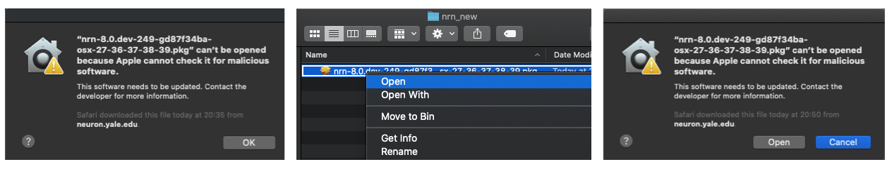

NEURON can be installed on a wide variety of hardware platforms. Based on your system and software environment you can choose one of the installation method described below.
Installing Binary Distribution
If you want to quickly get started with NEURON, we provide binary installers for Linux, Mac and Windows platforms.
Mac OS
Since version 7.8.1 we are providing Python wheels and NEURON can be installed using pip as:
pip3 install neuron
Python wheels are provided via pypi.org. Note that Python2 wheels are provided for the 8.0.x release series exclusively.
Like Windows, you can also use a binary installer to install NEURON. Recent releases are at
You can download legacy versions from:
Earlier Mac OS pkg installers have name in the format of
nrn-<version-id>-osx-37-38-39-310.pkg.
Like windows installers,
the, py-37-38-39-310 string in the installer name indicates that the given installer is
compatible with Python versions 3.7, 3.8, 3.9 and 3.10. Note that if you double-click the installer
then you might see warning like below. In this case you have to right-click on the installer and then
click Open. You can then see an option to Open installer:
The latest Mac OS pkg installers (as of 2022-01-01) are universal2 installers
(for arm64 and x86_64) and extend the name convention to specify which
architectures they run on and the minimum macosx version using the same
style as the python sysconfig.get_platform()
nrn-<version-id>-macosx-<target>-<archs>-py-<pythonversions>.pkg
e.g.
nrn-8.0a-726-gb9a811a32-macosx-11-universal2-py-38-39-310.pkg

The latest pkg installers will install NEURON under the directory /Applications/NEURON/ directory.
Uninstallng consists of dragging that folder to the trash. For GUI support you
have to install XQuartz separately. Once you start Terminal application, NEURON
binaries (nrniv, neurondemo etc.) should be available to start.
Universal2 installers generally “just work” on either an x86_64 or arm64 architecture.
python from neuron import h
and
nrnivmodlwill by default create an nmodl mechanism library specifically for the architecture you run on.But it may be the case on Apple M1 that you install a python that can only run as an x86_64 program under Rosetta2. E.g. The latest Anaconda Python3.9 (though it seems likely that the next distribution will be universal2). In this case, if you wish to launch nrniv, force nrniv to launch as an x86_64 program. E.g.
arch -arch x86_64 nrniv -python from neuron import h
Furthermore, be sure to run nrnivmodl in such a way that it compiles as an x86_64 library. e.g.
arch -arch x86_64 nrnivmodl
although this constructs an arm64 folder, it will compile and link as x86_64.
% lipo -archs arm64/libnrnmech.dylib x86_64
Alternatively, one can get a universal2 result with
nrnivmodl -incflags '-arch x86_64 -arch arm64' -loadflags '-arch x86_64 -arch arm64'
If, at runtime there is architecture mismatch between python, MPI, libnrnmech.so, or libnrniv.dylib, you will see an error message similar to
Could not dlopen NRN_PYLIB: /Users/hines/opt/anaconda3/lib/libpython3.9.dylib libnrniv.dylib running as arm64 but /Users/hines/opt/anaconda3/lib/libpython3.9.dylib can only run as x86_64
Note: there is an environment variable called
ARCHPREFERENCE. Seeman arch.It may be the case on an x86_64 that if you have an older x86_64 version of python3.8 or 3.9 installed that those versions of python are for macos earlier than 11. In that case, you may get a warning of the form
warning: ... built for newer macOS version (11.0) than being linked (10.9)One work around is to install a more recent python or a python with a more recent build. For example, the package installers at python.org contain the “macos11” string within the package name for the universal2 installers for python 3.8, 3.9, and 3.10.
Linux
Like Mac OS, since 7.8.1 release python wheels are provided and you can use pip to install NEURON as:
pip3 install neuron
Note that Python2 wheels are provided for the 8.0.x release series exclusively. Also, we are not providing .rpm or .deb installers for recent releases.
Windows
On Windows, the only recommended way to install NEURON is using the binary installer. You can download alpha or recent releases from:
The naming convention for Windows installers is nrn-<version-id>-mingw-py-37-38-39-310-setup.exe.
The py-37-38-39-310 string in the installer name indicates that the given installer is compatible
with Python versions 3.7, 3.8, 3.9 and 3.10. Once the installer is downloaded, you can install it
by double clicking like any other Windows application. Note that you have to install python separately
if python support is required. You can find detailed step-by-step instructions in
this presentation.
Windows Subsystem for Linux (WSL) Python Wheel
Alternatively, if you are using Windows Subsystem for Linux, you can install the available Linux Python wheel. Note that the default Linux distro installed by WSL is Ubuntu, and the following instructions are tailored accordingly.
Steps:
- Follow official Microsoft WSL installation guide: https://docs.microsoft.com/en-us/windows/wsl/install
Notes:
* WSL requires virtualization capabilities, please ensure they are enabled on your system (i.e. BIOS).
* If you are using VirtualBox, WSL2 is not supported (https://forums.virtualbox.org/viewtopic.php?t=95302)
To enable WSL1 from command prompt or powershell:
wsl --set-default-version 1
wsl --install -d Ubuntu
- Install
pip3
Open Ubuntu from programs and run the following:
sudo apt-get update
sudo apt install python3-pip python3-numpy
- Install NEURON
In the same terminal run:
pip3 install neuron
Close and open another terminal. You can do some sanity testing:
python3 -c "import neuron; neuron.test(); quit()"
- (Optional: NEURON GUI) Install
VcXsrv, a Windows X-server
- Download and install
VcXsrvfrom SourceForge. - Open
XLaunchfrom the Start Menu. In the setup wizard accept the default options untilExtra settingswhere you have to tickDisable access control. Additionally on the last page, click on theSave configurationbutton and save the configuration file in%APPDATA%\Microsoft\Windows\Start Menu\Programs\Startupin order to automatically launchVcXsrvat startup without re-doing the wizard. If prompted via Windows Defender Firewall, click onAllow access. - In an Ubuntu terminal run:
export DISPLAY=:0
and then you can just launch nrngui. In order to have this setting automatically when you open an Ubuntu terminal:
echo "export DISPLAY=:0" >> ~/.bashrc
In order to perform sanity checks of the NEURON GUI, from the Ubuntu terminal you can call:
neurondemo
Installing Source Distributions
If you are running NEURON in cluster/HPC environment where you would like to have better performance (e.g. using vendor compilers like Intel, Cray, AMD, NVIDIA etc.), we advise you to build the NEURON from source. Note that to use CoreNEURON with optimised CPU/GPU support, you have to install NEURON from source.
Install Build Dependencies
In order to build NEURON from source, the following packages must be available:
- Bison
- Flex
- C/C++ compiler suite
- CMake 3.15.0
The following packages are optional (see build options):
- Python >=3.7 (for Python interface)
- Cython (for RXD)
- MPI (for parallel)
- X11 (Linux) or XQuartz (MacOS) (for GUI)
Depending on platform you can install these dependencies as follows:
Mac OS - x86_64
The easiest way to install dependencies on Mac OS is to use brew or conda package manager. For example, once brew is installed you can do:
brew install coreutils openmpi cmake
brew install --cask xquartz
Once these packages are installed, setup PATH as:
export PATH=/usr/local/bin/:$PATH
If the desired python version is not installed, you can install it using official distribution. Also, note that Xcode Command Line Tools needs to be installed for development.
Mac OS - Apple M1
Install command line tools as
xcode-select --install
If desire classical NEURON GUI : from xquartz.org, click “Releases”, click XQuartz-2.8.0 (or newer version), and follow instructions. After installing, logout and log back in.
If you desire single click button action for X11 when entering a window then execute below command:
defaults write org.xquartz.X11 wm_ffm -bool trueFor the new default to take effect, logout then log back in.
Install dependencies with HomeBrew and pip as:
# install brew and initialize shell /bin/bash -c "$(curl -fsSL https://raw.githubusercontent.com/Homebrew/install/HEAD/install.sh)" echo 'eval $(/opt/homebrew/bin/brew shellenv)' >> $HOME/.zprofile eval $(/opt/homebrew/bin/brew shellenv) brew install cmake brew install open-mpi pip3 install --user --upgrade pip export PATH="$HOME/Library/Python/3.8/bin":$PATH pip3 install --user cython
Once these packages are installed, setup PATH as:
export PATH=/opt/homebrew/opt/bison/bin/:/opt/homebrew/opt/flex/bin/:/opt/homebrew/bin/:$PATH
Linux
Depending on the platform (Ubuntu, CentOS, Fedora, Debian, Red Hat etc.), there are different ways to install dependencies. For example, on Ubuntu:
sudo apt-get update
sudo apt-get install -y bison cmake flex git \
libncurses-dev libopenmpi-dev libx11-dev \
libxcomposite-dev openmpi-bin python3-dev
# for python dependencies
pip install scipy numpy cython
We recommend using platform specific instructions provided in nrn-build-ci repository.
Install NEURON using CMake
Starting with the 7.8.1 release, NEURON can be installed using the CMake build system. One of the primary advantages of a CMake-based build system is cross-platform support and integration with other projects like Interviews, CoreNEURON, NMODL etc. These projects are now integrated into single a CMake-based build system, and they can be installed together as shown below:
- Clone the latest version or specific release:
git clone https://github.com/neuronsimulator/nrn # latest development branch
git clone https://github.com/neuronsimulator/nrn -b 8.0.0 # specific release version 8.0.0
cd nrn
:warning: To build NEURON from source you either need to clone the NEURON Git repository or download a source code archive that includes Git submodules, such as thefull-src-package-X.Y.Z.tar.gzfile in the NEURON releases on GitHub. The tarballs likeSource code (tar.gz)orSource code (zip)created by GitHub are incomplete.
- Create a build directory:
mkdir build
cd build
- Run
cmakewith the appropriate options (see below for a list of common options). A full list of options can be found innrn/CMakeLists.txtand defaults are shown innrn/cmake/BuildOptionDefaults.cmake. e.g. a bare-bones installation:
cmake .. \
-DNRN_ENABLE_INTERVIEWS=OFF \
-DNRN_ENABLE_MPI=OFF \
-DNRN_ENABLE_RX3D=OFF \
-DPYTHON_EXECUTABLE=$(which python3) \
-DCMAKE_INSTALL_PREFIX=/path/to/install/directory
- Build the code:
cmake --build . --parallel 8 --target install
Feel free to set the number of parallel jobs (i.e. 8) according to your system using the --parallel option.
- Set PATH and PYTHONPATH environmental variables to use the installation:
export PATH=/path/to/install/directory/bin:$PATH
export PYTHONPATH=/path/to/install/directory/lib/python:$PYTHONPATH
Particularly useful CMake options are (use ON to enable and OFF to disable feature):
- -DNRN_ENABLE_INTERVIEWS=OFF : Disable Interviews (native GUI support)
- -DNRN_ENABLE_PYTHON=OFF : Disable Python support
- -DNRN_ENABLE_MPI=OFF : Disable MPI support for parallelization
- -DNRN_ENABLE_RX3D=OFF : Disable rx3d support
- -DNRN_ENABLE_CORENEURON=ON : Enable CoreNEURON support
- -DNRN_ENABLE_TESTS=ON : Enable unit tests
- -DPYTHON_EXECUTABLE=/python/binary/path : Use provided Python binary to build Python interface
- -DCMAKE_INSTALL_PREFIX=/install/dir/path : Location for installing
- -DCORENRN_ENABLE_NMODL=ON : Use NMODL instead of MOD2C for code generation with CoreNEURON
Please refer to docs/cmake_doc/options.rst for more information on the CMake options.
Optimized CPU and GPU Support using CoreNEURON
NEURON now integrates CoreNEURON library for improved simulation performance on modern CPU and GPU architectures. CoreNEURON is designed as a library within the NEURON simulator and can transparently handle all spiking network simulations including gap junction coupling with the fixed time step method. You can find detailed instructions here and here.
Run integrated tests
NEURON includes also some unit and integration tests. To enable you need to set the CMake flag -DNRN_ENABLE_TESTS=ON.
The tests lie in the test directory and cover various aspects of NEURON:
- CoreNEURON integration (if enabled in build step)
- Functionality and result regression test for ringtest and testcorenrn
- HOC interpreter tests
- Python interpreter tests
- Parallel Context tests
- Rx3d tests
- Unit tests
- GapJunction tests
To run the tests it’s needed to:
cd nrn/build
cmake .. \
-DNRN_ENABLE_INTERVIEWS=OFF \
-DNRN_ENABLE_MPI=OFF \
-DNRN_ENABLE_RX3D=OFF \
-DCMAKE_INSTALL_PREFIX=/path/to/install/directory
cmake --build . --parallel 8
ctest # use --parallel for speed, -R to run specific tests
FAQs
- I am getting link errors “undefined reference to ‘tgoto, tgetent, tputs’”.
This is often an issue due to missing ncurses library linking. In this case, we recommend passing your ncurses installation via CMake.
For example on Mac OS with a homebrew installation:
-DCMAKE_PREFIX_PATH="/usr/local/opt/ncurses" CMake option.
- I installed NEURON via pip but while using MPI I get “could not dynamically load libmpi.so or libmpich.so”.
NEURON will try to find MPI library in the standard library paths (e.g. /usr/lib). But on some systems MPI
libraries may not be in standard path. In that case you can try setting LD_LIBRARY_PATH (on linux) or DYLD_LIBRARY_PATH (on Mac OS):
export LD_LIBRARY_PATH=/path/of/mpi/installation/lib:$LD_LIBRARY_PATH
In some scenarios this may not be enough (e.g. with Anaconda installed MPI) in which case you can explicitly provide the path of MPI library using:
export MPI_LIB_NRN_PATH=/Applications/anaconda3/lib/libmpi.12.dylib
- Can I move installation directory?
As with any other UNIX package, it is not a good idea to move NEURON around once you’ve installed it, because the directory names are coded into the files themselves. If you need to move it, put a soft link in its original location that points to the new location (so the old filenames will still work). Better yet, simply recompile neuron specifying the new installation directory.
- How can I compile my mod files?
- cd to the directory that contains your .mod files.
- type “/install/dir/bin/nrnivmodl” (or, if you have set install directory in your PATH env variable, just type “nrnivmodl”)
This will create a subdirectory of the current directory which is your CPU name (e.g. x86_64). Inside this
directory is created the program “special”, which is the neuron binary that you want to run instead of nrniv.
- NEURON fails to launch because shared libraries cannot be found.
Make sure to LD_LIBRARY_PATH or DYLD_LIBRARY_PATH environmental variables. For example, using bash shell:
export LD_LIBRARY_PATH=/install/path/lib:$LD_LIBRARY_PATH. # on linux
export DYLD_LIBRARY_PATH=/install/path/lib:$DYLD_LIBRARY_PATH. # on Mac OS
- NEURON is not able to find correct Python or NEURON Python library. What can I do?
NEURON tries to find correct Python based on user’s environment. If you are using NEURON via python interpreter then,
as mentioned previously, setting PYTHONPATH would be sufficient. For nrniv or special binaries, you can also use
-pyexe option to specify which Python should be used by NEURON:
nrniv -pyexe /python/install/path/python-3.8.3/bin/python3
If you have enabled dynamic python support using NRN_ENABLE_PYTHON_DYNAMIC CMake option or installed NEURON via pip
and see error like below:
Could not load libnrnpython3
then NEURON is not able to find appropriate Python and corresponding Python library. You can verify which Python is being used by running following command:
$ nrnpyenv.sh
...
export NRN_PYTHONHOME="/python/install/path/python-3.8.3/"
export NRN_PYLIB="/python/install/path/python-3.8.3/lib/libpython3.8.so.1.0"
If NRN_PYTHONHOME and NRN_PYLIB are inappropriate then you can set them explicitly or use -pyexe option mentioned above.
- How to build NEURON in cluster environment where build node architecture is different than compute node?
In cluster environment, sometime we have different architecture of login/build nodes than compute nodes (similar to
cross-compile environment). NEURON has tools like nocmodl, modlunit which are executed on login/build
nodes. If these tools are compiled with compute node architecture then we might see error like:
[ 10%] Generating ../../../src/nrnoc/syn.c
Please verify that both the operating system and the processor support Intel(R) AVX512ER and AVX512PF instructions.
or even segmentation fault when MOD files are translated to C files.
To avoid this, we have to build nocmodl, modlunit with login/build node architecture. NEURON by default set -O0 compile flag for these tools to avoid compiler generating architecture specific instructions. But if this is not sufficient, you can set NRN_NMODL_CXX_FLAGS CMake option specifying which compiler flags should be used. For example:
cmake .. [other options] \
-DCMAKE_CXX_FLAGS="-O3 -xMIC-AVX512" \
-DCMAKE_BUILD_TYPE=Custom \
-DNRN_NMODL_CXX_FLAGS="-xHost"
In the above example, we used custom build type with Intel compiler’s -xMIC-AVX512 flag for KNL architecture but used -xHost flag so that nocmodl and modlunit are compiled compatible with host architecture (i.e. node where NEURON is being built).
I’m getting “unrecognized command-line option” build errors on macos as python extensions are being built.
Certain combinations of Python environment and C/C++ compiler on macos may lead to build errors of this kind:
running build_ext
building 'neuron.rxd.geometry3d.graphicsPrimitives' extension
creating build
creating build/temp.macosx-10.15-x86_64-2.7
/usr/local/bin/gcc-10 -fno-strict-aliasing -fno-common -dynamic -g -Os -pipe -fno-common -fno-strict-aliasing -fwrapv -DENABLE_DTRACE -DMACOSX -DNDEBUG -Wall -Wstrict-prototypes -Wshorten-64-to-32 -iwithsysroot /usr/local/libressl/include -DNDEBUG -g -fwrapv -Os -Wall -Wstrict-prototypes -DENABLE_DTRACE -arch x86_64 -pipe -I/Users/user/nrn/share/lib/python/neuron/rxd/geometry3d -I. -I/System/Library/Frameworks/Python.framework/Versions/2.7/Extras/lib/python/numpy/core/include -I/Applications/Xcode.app/Contents/Developer/Platforms/MacOSX.platform/Developer/SDKs/MacOSX11.1.sdk/System/Library/Frameworks/Python.framework/Versions/2.7/include/python2.7 -c graphicsPrimitives.cpp -o build/temp.macosx-10.15-x86_64-2.7/graphicsPrimitives.o -O0
gcc-10: error: /usr/local/libressl/include: No such file or directory
gcc-10: error: unrecognized command-line option '-Wshorten-64-to-32'
gcc-10: error: unrecognized command-line option '-iwithsysroot'; did you mean '-isysroot'?
error: command '/usr/local/bin/gcc-10' failed with exit status 1
The reason for this type of failure is that Python will provide build command-arguments for extension building based on its own build. If the compiler used to build NEURON expects different commands (eg. gcc vs. clang) then above error will be encountered.
A workaround for this issue is to set the CFLAGS environment variable providing build arguments
compatible with your compiler. Here is an example for gcc/clang:
export CFLAGS="-fno-strict-aliasing -fno-common -dynamic -g -Os -pipe -DMACOSX -DNDEBUG -Wall -Wstrict-prototypes"
If you see any other issues, please open an issue here.